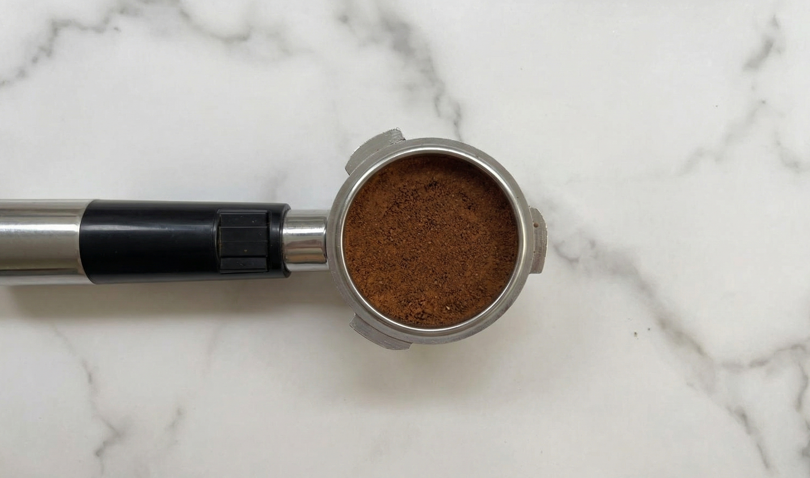

Specialty Coffee · Boutique
Rondón Castillo —
SCA 84.5 · Grain entier
Explorer la boutique →
SCA 84.5 · Grain entier

Club Don Alberto · Abonnement
Café de spécialité frais
chaque mois
Rejoindre le Club →
chaque mois